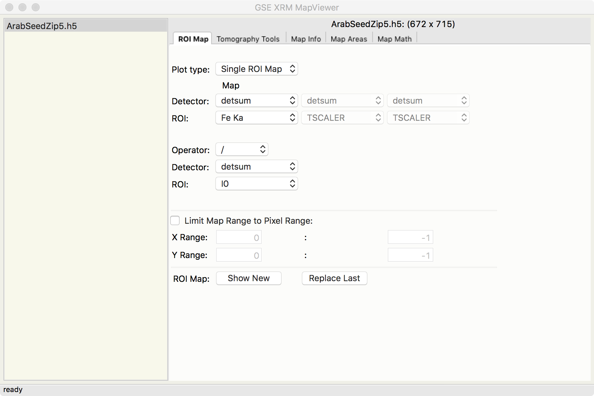
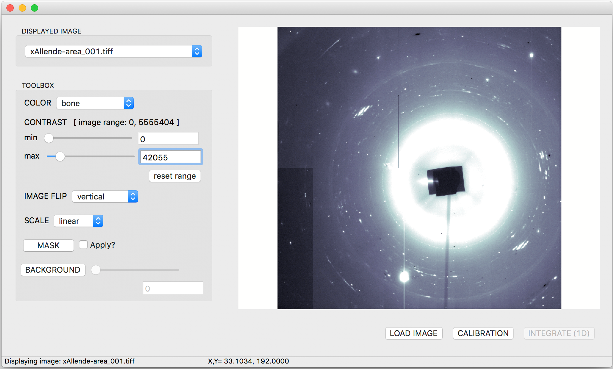

4.2. GSECARS Mapviewr¶
The GSECARS Mapviewer is one of the main GUI applications of Larch, allowing users to read and display HDF5 files containing X-ray fluorescence maps from synchrotron X-ray microprobes. The program plays the dual role of displaying existing X-ray microprobe maps in HDF5 format and assembling those HDF5 X-ray microprobe map files from the raw data as collected APS beamline 13-ID-E or other microprobes using the same Epics scanning software used there.
{kind=link}

The Application itself contains two main panels. On the left is a browser from which the user can select which of several open map files to use. On the right a set of tabbed windows selects how to interact with that selected map file.
In the first (left most and default) of these tabbed views, one can select pre-calculated Regions of Interest (ROIs) for viewing. These ROIs usually representing a single X-ray fluorescence line for a single element. One can view these ROI data as intensity mapse, either shown as a false-color image for a single ROI, a Red-Green-Blue image for 3 different ROIs, or as a 2-D grid of maps and correlation plots for 2 different ROIs.
All these images are made using wxmplot and matplotlib, and are fully interactive with zooming, changing interpolation methods and color tables, and setting intensity thresholds.
The images have 3 different “cursor modes” to change how the program responds to the cursor (left mouse button). The main mode is that Left-Mouse-Button down-and-drag draws a rectangle to select a zoomed-in portion of the image when the button is released.
The user can also put the cursor into a mode to “Pick Area for XRF Spectrum”. In this mode, the mouse is used to draw freestyle “lasso box” around any selected points in the map. When released, the full X-ray fluorescence spectrum from that map area is extracted from the map and displays, as shown below.


Other displays of the same XRF Map data. On the left, 3 different elements are encoded into Red, Green, and Blue. On the right, an interactive display of the correlation of two maps is shown.
{kind=link}
Larch can also handle micro-X-ray Diffraction maps, with a simple view of a diffraction pattern shown here.